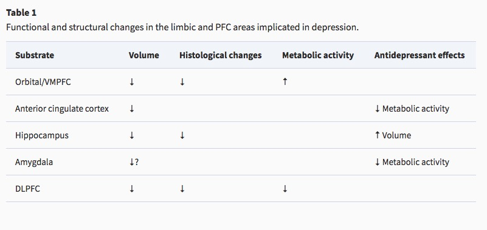
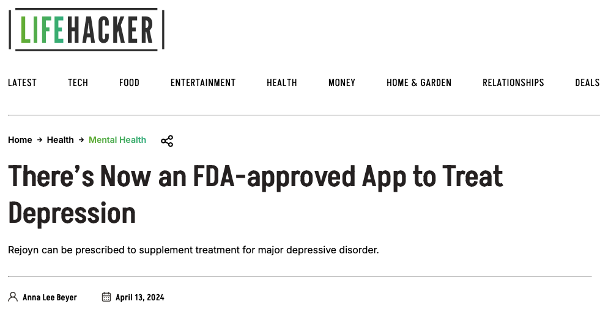
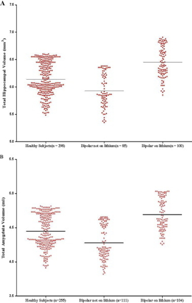
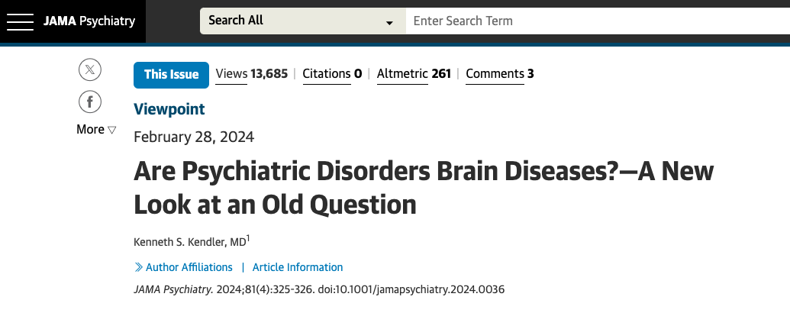

flowchart LR A[Genes] --> B[Schizophrenia] A --> C[Brain] C --> B
Disorders of affect
Major Depressive Disorder (MDD)
- Most common neuropsychiatric disorder (Levey et al., 2021)
Symptoms
- Unhappy mood, insomnia, lethargy, loss of pleasure, interest, energy
- Agitation
- Lasting for several weeks or more
- Experienced by ~10% Americans in any year (Hasin et al., 2018)
- Prevalence (up to ~20% lifetime in US) (Hasin et al., 2018)
- Females > males; White & Native American > African American, Asian/Pacific Islander or Hispanic (Hasin et al., 2018)
- Comorbid with generalized anxiety disorder and borderline personality disorder
- more than 13% attempted suicide during a severe episode (Hasin et al., 2018)
(Neuro)biology of
Reduced sizes of brain regions
- Reduced hippocampal volumes



Hypoactivity
- Frontal and temporal cortex
- Anterior cingulate
- Insula
- Cerebellum

Hyperactivity
- Both valence-specific and non-valence specific
Altered connectivity
- Increased connectivity between resting state network regions and dorsal PFC (Sheline, Price, Yan, & Mintun, 2010)

(Cheng et al., 2016)
- Resting state fMRI (rsFMRI) in 421 patients with major depressive disorder and 488 control subjects.
- Reduced connectivity between orbitofrontal cortex (OFC) and other areas of the brain
- Increased connectivity between lateral PFC and other brain areas (~ (Sheline et al., 2010)).
Summary
Genetic risk
- Heritability 40-50% (Lohoff, 2010)
- Hundreds of candidate genes (Flint, 2023; Levey et al., 2021)
- Examples: NEGR1 (neuronal growth regulator) in hypothalamus DRD2 (dopamine receptor 2) in the nucleus accumbens and other areas.

- And large sample, genome-wide association studies (GWAS) have low specificity (Flint, 2023) for MDD per se

Note
Sensitivity: p(positive test) | person has condition.
Specificity: p(negative test) | person is well.
Best tests maximize both.

 Related to Type 1 (False Positive) and Type II (False Negative) errors in statistical inference.
Related to Type 1 (False Positive) and Type II (False Negative) errors in statistical inference.
| Evidence says | True fact | False fact |
|---|---|---|
| True | True positive | False positive (Type I) |
| False | False negative (Type II) | True negative |
Pharmacological factors
- Endocrine
- Thyroid dysfunction (Medici et al., 2014)
- Altered cortisol reactivity (Burke, Davis, Otte, & Mohr, 2005)
- Brain-derived neurotrophic factor (BDNF)
- Proinflammatory cytokines
Monoamine (5-HT and NE) hypothesis
- More: euphoria
- Less: depression
- Evidence for
- Resperine (antagonist for NE & 5-HT) can cause depression
- Low serotonin (5-HT) metabolite levels in CSF of suicidal depressives (Samuelsson, Jokinen, Nordström, & Nordström, 2006)
Measuring 5-HT
- CSF, platelets, plasma, urine, saliva
- CSF & platelets correlate highly (Audhya, Adams, & Johansen, 2012)
- But salivary 5-HT does not correlate with mood symptoms (Leung et al., 2018)
Treatments
Psychotherapy: Neural responses
- increased rostral anterior cingulate cortex (rACC) activation vs. decrease in healthy controls
- decreased activity in left precentral gyrus


Brain stimulation
https://www.nimh.nih.gov/health/topics/brain-stimulation-therapies/brain-stimulation-therapies
- Food & Drug Administration (FDA) authorized therapies
- Electroconvulsive therapy (ECT)
- Repetitive transcranial magnetic stimulation (TMS)
- Vagus nerve stimulation
- Experimental therapies
- Magnetic seizure therapy
- Deep brain stimulation
- tDCS
Electroconvulsive Therapy (ECT)
- Last line of treatment for drug-resistant depression
- Electric current delivered to the brain causes 30-60s seizure.
- ECT usually done in a hospital’s operating or recovery room under general anesthesia.
- Once every 2 - 5 days for a total of 6 - 12 sessions.
- Remission rates of up to 50.9% (Dierckx, Heijnen, Broek, & Birkenhäger, 2012)
- Seems to work via
- Post-seizure responses: Brain’s instrinsic anticonvulsant effects (blocking Na+ channel or enhance GABA function)
- Neurotrophic effects (neurogenesis stimulated)
Transcranial Direct Current Stimulation (tDCS)
- Much weaker currents, more easily used in diverse (non-hospital) settings (Thair, Holloway, Newport, & Smith, 2017)
- May reduce depression and state anxiety in older adults (Hausman et al., 2024)
Drugs
- Monoamine oxidase (MAO) inhibitors (MAO-Is)
- MAO inactivates monoamines in terminal buttons
- MAO-I’s boost monoamine levels
- Side effects include sleepiness, dizziness, dry mouth, blurred vision, changes in blood pressure, changes in heart rate, weight gain, nausea
- Tricyclics
- Inhibit NE, 5-HT reuptake
- Upregulate monoamine levels, but non-selective = side effects
- Selective Serotonin Reuptake Inhibitors (SSRIs)
- Fluoxetine (Prozac, Paxil, Zoloft)
- Inhibit 5-HT inactivation (reuptake)
- Prolong duration of 5-HT in synaptic cleft
- Indirectly increase brain steroid production
- Serotonin/Norepinephrine Reuptake Inhibitors (SNRIs)
Drug effectiveness
On SSRI for 12-14 weeks. ~1/3 achieved remission; 10-15% showed symptom reduction.
If SSRI didn’t work, could switch drugs. ~25% became symptom free.
16% of participants dropped out due to tolerability issues
Took 6-7 weeks to show response
Recent reanalyses (Pigott, Kim, Xu, Kirsch, & Amsterdam, 2023) suggest “In contrast to the STAR*D-reported 67% cumulative remission rate after up to four antidepressant treatment trials, the rate was 35.0%…”
For children and adolescents…
Overall, methodological shortcomings of the randomised trials make it difficult to interpret the findings with regard to the efficacy and safety of newer antidepressant medications. Findings suggest that most newer antidepressants may reduce depression symptoms in a small and unimportant way compared with placebo. Furthermore, there are likely to be small and unimportant differences in the reduction of depression symptoms between the majority of antidepressants. However, our findings reflect the average effects of the antidepressants, and given depression is a heterogeneous condition, some individuals may experience a greater response… Children and adolescents considered at risk of suicide were frequently excluded from trials, so that we cannot be confident about the effects of these medications for these individuals.
Who benefits from drug therapy?
- May depend on
- Early life stress
- Brain (amygdala) response to emotional faces (Goldstein-Piekarski et al., 2016)
- Low-stress + low amyg reactivity -> > responding
- High stress + high amyg reactivity -> > responding

Problems with monoamine hypothesis
- Too simplistic
- NE, 5-HT interact
- Drugs fast acting (min), but improvement slow (weeks)
- “No correlation between serotonin and its metabolite 5-HIAA in the cerebrospinal fluid and [11C]AZ10419369 binding measured with PET in healthy volunteers.” (Tiger et al., 2015)
- Monamine depletion studies…
“…we performed the first meta-analysis of the mood effects in ATD and APTD studies. The depletion of monoamine systems (both 5-HT and NE/DA) does not decrease mood in healthy controls. However, in healthy controls with a family history of MDD the results suggest that mood is slightly decreased…by [monoamine depletion]…” (Ruhé, Mason, & Schene, 2007)
Note
Acute tryptophan depletion (ATD) targets 5-HT; phenylalanine/tyrosine depletion (APTD) targets DA; alpha-methyl-para-tyrosine (AMPT) targets NE/DA.
The serotonin hypothesis of depression is still influential. We aimed to synthesise and evaluate evidence on whether depression is associated with lowered serotonin concentration or activity in a systematic umbrella review of the principal relevant areas of research. PubMed, EMBASE and PsycINFO were searched using terms appropriate to each area of research, from their inception until December 2020. Systematic reviews, meta-analyses and large data-set analyses in the following areas were identified: serotonin and serotonin metabolite, 5-HIAA, concentrations in body fluids; serotonin 5-HT1A receptor binding; serotonin transporter (SERT) levels measured by imaging or at post-mortem; tryptophan depletion studies; SERT gene associations and SERT gene-environment interactions…The main areas of serotonin research provide no consistent evidence of there being an association between serotonin and depression, and no support for the hypothesis that depression is caused by lowered serotonin activity or concentrations. (Moncrieff et al., 2022)
Get ’appy

Evaluating treatments
Ketamine, again
- Relieves depressive symptoms relatively quickly (Berman et al., 2000; Zarate et al., 2006)
- Boosts synaptic spine formation (Li et al., 2010) and reverses effects of induced stress
- May operate via endogenous opioid system (Jiang, DiLeone, Pittenger, & Duman, 2024)
Putative pathway of pathology
- Depression ~ chronic stress (Mahar et al., 2014)
- Stress -> chronic HPA axis activity
- Chronic HPA activity -> neuronal atrophy in hipp & PFC
- Stress & cortisol decrease expression of brain-derived neurotrophic factor (BDNF)
- BDNF boosts neurogenesis
- SSRIs act via BDNF, as do NMDA receptor antagonists (e.g., ketamine)
Putting the pieces together
Bipolar disorder
Background
- Formerly “manic depression” or “manic depressive disorder”
- Alternating mood states
- Mania or hypomania (milder form)
- Depression
- Cycles 3-6 mos in length, but
- Rapid cycling (weeks or days)
- Suicide risk 20-60x normal population, Baldessarini, Pompili, & Tondo (2006)

- 1-3% lifetime prevalence, subthreshold affects another ~2% Merikangas et al. (2007)
- Subtypes
- Bipolar I: manic episodes, possible depressive ones
- Bipolar II: no manic episodes but hypomania (disinhibition, irritability/agitation) + depression
- Psychosis (hallucinations or delusions)
- Anxiety, attention-deficit hyperactivity disorder (ADHD)
- Substance abuse
(Neuro)biology of
From a neurobiological perspective there is no such thing as bipolar disorder. Rather, it is almost certainly the case that many somewhat similar, but subtly different, pathological conditions produce a disease state that we currently diagnose as bipolarity. This heterogeneity – reflected in the lack of synergy between our current diagnostic schema and our rapidly advancing scientific understanding of the condition – limits attempts to articulate an integrated perspective on bipolar disorder.
Genetics
- 40-70% concordance (or higher in some samples)
- Polygenic (many risk alleles)
- Overlap between bipolar disorder and schizophrenia (Craddock & Sklar, 2013)
- Genes for voltage-gated Ca++ channels
- Regulate NT, hormone release
- Gene expression, cell metabolism
- (Craddock & Sklar, 2013; Cross-Disorder Group of the Psychiatric Genomics Consortium, 2013)
Compromised cognitive control & emotion regulation (Maletic & Raison, 2014)

Structural changes
- Amygdala, hippocampus volume reduced; ventricles larger

- Other evidence for subcortical changes.

- Cortical abnormalities.

- White matter disruption.

Altered network connectivity
The findings are preliminary, sometimes even contradictory, and do not allow a complete understanding of connectivity in BD. However, they support the theory of cortico-limbic regulation and suggest that connectivity may be more complex than just an increase or a decrease in connectivity between cortico-limbic networks (Townsend et al., 2013) because different subregions of one brain area may have different connectivity with other brain area. Therefore, to understand connectivity, it may be necessary that future studies consider PFC intraregional connectivity (Anticevic et al., 2012).
(Vargas, López-Jaramillo, & Vieta, 2013)


This work provides an overview of the most consistent alterations in bipolar disorder (BD), attempting to unify them in an internally coherent working model of the pathophysiology of BD. Data on immune-inflammatory changes, structural brain abnormalities (in gray and white matter), and functional brain alterations (from neurotransmitter signaling to intrinsic brain activity) in BD were reviewed. Based on the reported data, (1) we hypothesized that the core pathological alteration in BD is a damage of the limbic network that results in alterations of neurotransmitter signaling. Although heterogeneous conditions can lead to such damage, we supposed that the main pathophysiological mechanism is traceable to an immune/inflammatory-mediated alteration of white matter involving the limbic network connections, which destabilizes the neurotransmitter signaling, such as dopamine and serotonin signaling. Then, (2) we suggested that changes in such neurotransmitter signaling (potentially triggered by heterogeneous stressors onto a structurally-damaged limbic network) lead to phasic (and often recurrent) reconfigurations of intrinsic brain activity, from abnormal subcortical–cortical coupling to changes in network activity. We suggested that the resulting dysbalance between networks, such as sensorimotor networks, salience network, and default-mode network, clinically manifest in combined alterations of psychomotricity, affectivity, and thought during the manic and depressive phases of BD. Finally, (3) we supposed that an additional contribution of gray matter alterations and related cognitive deterioration characterize a clinical–biological subgroup of BD. This model may provide a general framework for integrating the current data on BD and suggests novel specific hypotheses, prompting for a better understanding of the pathophysiology of BD.
Drug treatments
- Anti-depressants not especially effective (Gitlin, 2018; Sidor & MacQueen, 2012)
- May destablize mood
- Mood stabilizers
- Lithium (Li)
- Valproate (Depakote)
- Anticonvulsants
- Typically used to treat epilepsy
- Usually GABA-A agonists
- e.g. lamotrigine (Lamictal)
- Atypical antipsychotics
Lithium
- “Discovered” accidentally
- John Cade discovered in 1948
- Injections of manic patients’ urine with a lithium compound (chemical stabilizer) into guinea pig test animals
- Had calming effect
- Earliest effective medications for treating mental illness
- Effects of
- Reduces mania, minimal effects on depressive states
- Preserves prefrontal cortex (PFC), hippocampus, amygdala volumes
- Has other ‘neuroprotective’ effects (Machado-Vieira, Manji, & Zarate, 2009)
- downregulates DA, glutamate; upregulates GABA
- modulates 5-HT, NE
- levels can be tested/monitored via blood test
- (Malhi, Tanious, Das, Coulston, & Berk, 2013)
Other treatment options
- Psychotherapy
- Electroconvulsive Therapy (ECT)
- Sleep medications
Prospects
Systematic Treatment Enhancement Program for Bipolar Disorder (STEP-BD) cohort
- \(n=1,469\)
- 58% achieved recovery
- 49% (of recovered) had recurrences within 2 years
- Residual depressive symptoms can persist
- (Geddes & Miklowitz, 2013)
Bipolar and Schizophrenia Network for Intermediate Phenotypes (BSNIP Project)
Bipolar and schizophrenia network for intermediate phenotypes is a network of investigator-driven laboratories focused on developing phenotypes, genotypes, and biomarkers for psychosis. Over the last 5 years, the consortium has accomplished a dense phenotyping protocol using probands with a lifetime history of psychosis, their relatives, and healthy controls. This has established a library of biomarker information on individuals with schizophrenia, schizoaffective disorder, and bipolar disorder with psychosis. The founding goal of establishing disease biomarkers for current psychotic diagnoses has been poorly met, because the cognitive, electrophysiologic, eye movement, and brain imaging biomarkers did not regularly discriminate individuals with different DSM psychosis diagnoses. In future, we will use this biomarker information to establish a pathway to biomarker-based classification in psychoses.
ENIGMA BD working group


BP summed-up
- Changes in mood, but ≠ depression
- Genetic + environmental risk
- Changes in emotion processing network activity, size of hippocampus
- Heterogeneous
- No simple link to a specific NT system

The disordered mind
- Multi-level, multi-method, multi-variate approaches essential to understanding mental illness
- Developmental processes across the life span
- Networks all the way down…

Can we show that critical causal pathways to psychiatric illness occur in the brain? (Kendler, 2024)
- In other words…
…we report common variant associations at 287 distinct genomic loci. Associations were concentrated in genes that are expressed in excitatory and inhibitory neurons of the central nervous system, but not in other tissues or cell types. (Trubetskoy et al., 2022)
Our way forward is to convert this question into a scientifically tractable form, which I try to do here by asking where in the human body genetic risk factors for our disorders are expressed. A tentative answer, at least for schizophrenia…“it is entirely in the brain.” (Kendler, 2024)
References
Audhya, T., Adams, J. B., & Johansen, L. (2012). Correlation of serotonin levels in CSF, platelets, plasma, and urine. Biochimica Et Biophysica Acta, 1820(10), 1496–1501. https://doi.org/10.1016/j.bbagen.2012.05.012
Baldessarini, R. J., Pompili, M., & Tondo, L. (2006). Suicide in Bipolar Disorder: Risks and Management. CNS Spectrums, 11(06), 465–471. https://doi.org/10.1017/S1092852900014681
Berman, R. M., Cappiello, A., Anand, A., Oren, D. A., Heninger, G. R., Charney, D. S., & Krystal, J. H. (2000). Antidepressant effects of ketamine in depressed patients. Biol. Psychiatry, 47(4), 351–354. Retrieved from https://www.ncbi.nlm.nih.gov/pubmed/10686270
Beyer, A. L. (2024, April). There’s now an FDA-approved app to treat depression. https://lifehacker.com/health/rejoyn-fda-approved-depression-app. Retrieved from https://lifehacker.com/health/rejoyn-fda-approved-depression-app
Bi, B., Che, D., & Bai, Y. (2022). Neural network of bipolar disorder: Toward integration of neuroimaging and neurocircuit-based treatment strategies. Translational Psychiatry, 12(1), 143. https://doi.org/10.1038/s41398-022-01917-x
Burke, H. M., Davis, M. C., Otte, C., & Mohr, D. C. (2005). Depression and cortisol responses to psychological stress: A meta-analysis. Psychoneuroendocrinology, 30(9), 846–856. https://doi.org/10.1016/j.psyneuen.2005.02.010
Cheng, W., Rolls, E. T., Qiu, J., Liu, W., Tang, Y., Huang, C.-C., … Feng, J. (2016). Medial reward and lateral non-reward orbitofrontal cortex circuits change in opposite directions in depression. Brain, aww255. https://doi.org/10.1093/brain/aww255
Ching, C. R. K., Hibar, D. P., Gurholt, T. P., Nunes, A., Thomopoulos, S. I., Abé, C., … ENIGMA Bipolar Disorder Working Group. (2022). What we learn about bipolar disorder from large-scale neuroimaging: Findings and future directions from the ENIGMA bipolar disorder working group. Human Brain Mapping, 43(1), 56–82. https://doi.org/10.1002/hbm.25098
Craddock, N., & Sklar, P. (2013). Genetics of bipolar disorder. The Lancet, 381(9878), 1654–1662. https://doi.org/10.1016/S0140-6736(13)60855-7
Cross-Disorder Group of the Psychiatric Genomics Consortium. (2013). Identification of risk loci with shared effects on five major psychiatric disorders: A genome-wide analysis. The Lancet, 381(9875), 1371–1379. https://doi.org/10.1016/S0140-6736(12)62129-1
Dierckx, B., Heijnen, W. T., Broek, W. W. van den, & Birkenhäger, T. K. (2012). Efficacy of electroconvulsive therapy in bipolar versus unipolar major depression: A meta-analysis. Bipolar Disorders, 14(2), 146–150. https://doi.org/10.1111/j.1399-5618.2012.00997.x
Duman, R. S., & Voleti, B. (2012). Signaling pathways underlying the pathophysiology and treatment of depression: Novel mechanisms for rapid-acting agents. Trends Neurosci., 35(1), 47–56. https://doi.org/10.1016/j.tins.2011.11.004
Fitzgerald, P. B., Laird, A. R., Maller, J., & Daskalakis, Z. J. (2008). A meta-analytic study of changes in brain activation in depression. Human Brain Mapping, 29(6), 683–695. https://doi.org/10.1002/hbm.20426
Flint, J. (2023). The genetic basis of major depressive disorder. Molecular Psychiatry, 28(6), 2254–2265. https://doi.org/10.1038/s41380-023-01957-9
Frohlich, J., & Van Horn, J. D. (2014). Reviewing the ketamine model for schizophrenia. J. Psychopharmacol., 28(4), 287–302. https://doi.org/10.1177/0269881113512909
Geddes, J. R., & Miklowitz, D. J. (2013). Treatment of bipolar disorder. The Lancet, 381(9878), 1672–1682. https://doi.org/10.1016/S0140-6736(13)60857-0
Gitlin, M. J. (2018). Antidepressants in bipolar depression: An enduring controversy. International Journal of Bipolar Disorders, 6(1), 25. https://doi.org/10.1186/s40345-018-0133-9
Goldstein-Piekarski, A. N., Korgaonkar, M. S., Green, E., Suppes, T., Schatzberg, A. F., Hastie, T., … Williams, L. M. (2016). Human amygdala engagement moderated by early life stress exposure is a biobehavioral target for predicting recovery on antidepressants. Proceedings of the National Academy of Sciences, 113(42), 11955–11960. https://doi.org/10.1073/pnas.1606671113
Hallahan, B., Newell, J., Soares, J. C., Brambilla, P., Strakowski, S. M., Fleck, D. E., … McDonald, C. (2011). Structural Magnetic Resonance Imaging in Bipolar Disorder: An International Collaborative Mega-Analysis of Individual Adult Patient Data. Biological Psychiatry, 69(4), 326–335. https://doi.org/10.1016/j.biopsych.2010.08.029
Hamilton, J. P., Etkin, A., Furman, D. J., Lemus, M. G., Johnson, R. F., & Gotlib, I. H. (2012). Functional neuroimaging of major depressive disorder: A Meta-Analysis and new integration of baseline activation and neural response data. AJP, 169(7), 693–703. https://doi.org/10.1176/appi.ajp.2012.11071105
Hasin, D. S., Sarvet, A. L., Meyers, J. L., Saha, T. D., Ruan, W. J., Stohl, M., & Grant, B. F. (2018). Epidemiology of adult DSM-5 major depressive disorder and its specifiers in the united states. JAMA Psychiatry, 75(4), 336–346. https://doi.org/10.1001/jamapsychiatry.2017.4602
Hausman, H. K., Alexander, G. E., Cohen, R., Marsiske, M., DeKosky, S. T., Hishaw, G. A., … Woods, A. J. (2024). tDCS reduces depression and state anxiety symptoms in older adults from the augmenting cognitive training in older adults study (ACT). Brain Stimulation, 17(2), 283–311. https://doi.org/10.1016/j.brs.2024.02.021
Hetrick, S. E., McKenzie, J. E., Bailey, A. P., Sharma, V., Moller, C. I., Badcock, P. B., … Meader, N. (2021). New generation antidepressants for depression in children and adolescents: A network meta-analysis. Cochrane Database of Systematic Reviews, 5(5), CD013674. https://doi.org/10.1002/14651858.CD013674.pub2
Jiang, C., DiLeone, R. J., Pittenger, C., & Duman, R. S. (2024). The endogenous opioid system in the medial prefrontal cortex mediates ketamine’s antidepressant-like actions. Translational Psychiatry, 14(1), 90. https://doi.org/10.1038/s41398-024-02796-0
Kendler, K. S. (2024). Are psychiatric disorders brain Diseases?-A new look at an old question. JAMA Psychiatry, 81(4), 325–326. https://doi.org/10.1001/jamapsychiatry.2024.0036
Leung, J., Selvage, C., Bosdet, T., Branov, J., Rosen-Heath, A., Bishop, C., … Horvath, G. (2018). Salivary serotonin does not correlate with central serotonin turnover in adult phenylketonuria (PKU) patients. Molecular Genetics and Metabolism Reports, 15, 100–105. https://doi.org/10.1016/j.ymgmr.2018.03.008
Levey, D. F., Stein, M. B., Wendt, F. R., Pathak, G. A., Zhou, H., Aslan, M., … Gelernter, J. (2021). Bi-ancestral depression GWAS in the million veteran program and meta-analysis in >1.2 million individuals highlight new therapeutic directions. Nature Neuroscience, 24(7), 954–963. https://doi.org/10.1038/s41593-021-00860-2
Li, N., Lee, B., Liu, R.-J., Banasr, M., Dwyer, J. M., Iwata, M., … Duman, R. S. (2010). mTOR-dependent synapse formation underlies the rapid antidepressant effects of NMDA antagonists. Science, 329(5994), 959–964. https://doi.org/10.1126/science.1190287
Lohoff, F. W. (2010). Overview of the genetics of major depressive disorder. Current Psychiatry Reports, 12(6), 539. https://doi.org/10.1007/s11920-010-0150-6
Machado-Vieira, R., Manji, H. K., & Zarate, C. A., Jr. (2009). The role of lithium in the treatment of bipolar disorder: Convergent evidence for neurotrophic effects as a unifying hypothesis. Bipolar Disorders, 11 Suppl 2, 92–109. https://doi.org/10.1111/j.1399-5618.2009.00714.x
Magioncalda, P., & Martino, M. (2022). A unified model of the pathophysiology of bipolar disorder. Molecular Psychiatry, 27(1), 202–211. https://doi.org/10.1038/s41380-021-01091-4
Mahar, I., Bambico, F. R., Mechawar, N., & Nobrega, J. N. (2014). Stress, serotonin, and hippocampal neurogenesis in relation to depression and antidepressant effects. Neuroscience & Biobehavioral Reviews, 38, 173–192. https://doi.org/10.1016/j.neubiorev.2013.11.009
Maletic, V., & Raison, C. (2014). Integrated neurobiology of bipolar disorder. Frontiers in Psychiatry / Frontiers Research Foundation, 5, 98. https://doi.org/10.3389/fpsyt.2014.00098
Malhi, G. S., Tanious, M., Das, P., Coulston, C. M., & Berk, M. (2013). Potential Mechanisms of Action of Lithium in Bipolar Disorder. CNS Drugs, 27(2), 135–153. https://doi.org/10.1007/s40263-013-0039-0
Medici, M., Direk, N., Visser, W. E., Korevaar, T. I. M., Hofman, A., Visser, T. J., … Peeters, R. P. (2014). Thyroid function within the normal range and the risk of depression: A population-based cohort study. J. Clin. Endocrinol. Metab., 99(4), 1213–1219. https://doi.org/10.1210/jc.2013-3589
Merikangas, K. R., Akiskal, H. S., Angst, J., Greenberg, P. E., Hirschfeld, R. M. A., Petukhova, M., & Kessler, R. C. (2007). Lifetime and 12-month prevalence of bipolar spectrum disorder in the national comorbidity survey replication. Archives of General Psychiatry, 64(5), 543–552. https://doi.org/10.1001/archpsyc.64.5.543
Moncrieff, J., Cooper, R. E., Stockmann, T., Amendola, S., Hengartner, M. P., & Horowitz, M. A. (2022). The serotonin theory of depression: A systematic umbrella review of the evidence. Molecular Psychiatry. https://doi.org/10.1038/s41380-022-01661-0
Palazidou, E. (2012). The neurobiology of depression. British Medical Bulletin, 101, 127–145. https://doi.org/10.1093/bmb/lds004
Pigott, H. E., Kim, T., Xu, C., Kirsch, I., & Amsterdam, J. (2023). What are the treatment remission, response and extent of improvement rates after up to four trials of antidepressant therapies in real-world depressed patients? A reanalysis of the STAR*D study’s patient-level data with fidelity to the original research protocol. BMJ Open, 13(7), e063095. https://doi.org/10.1136/bmjopen-2022-063095
Ruhé, H. G., Mason, N. S., & Schene, A. H. (2007). Mood is indirectly related to serotonin, norepinephrine and dopamine levels in humans: A meta-analysis of monoamine depletion studies. Molecular Psychiatry, 12(4), 331–359. https://doi.org/10.1038/sj.mp.4001949
Samuelsson, M., Jokinen, J., Nordström, A.-L., & Nordström, P. (2006). CSF 5-HIAA, suicide intent and hopelessness in the prediction of early suicide in male high-risk suicide attempters. Acta Psychiatrica Scandinavica, 113(1), 44–47. https://doi.org/10.1111/j.1600-0447.2005.00639.x
Sankar, A., Melin, A., Lorenzetti, V., Horton, P., Costafreda, S. G., & Fu, C. H. Y. (2018). A systematic review and meta-analysis of the neural correlates of psychological therapies in major depression. Psychiatry Research. Neuroimaging, 279, 31–39. https://doi.org/10.1016/j.pscychresns.2018.07.002
Sheline, Y. I., Price, J. L., Yan, Z., & Mintun, M. A. (2010). Resting-state functional MRI in depression unmasks increased connectivity between networks via the dorsal nexus. Proc. Natl. Acad. Sci. U. S. A., 107(24), 11020–11025. https://doi.org/10.1073/pnas.1000446107
Sidor, M. M., & MacQueen, G. M. (2012). An update on antidepressant use in bipolar depression. Current Psychiatry Reports, 14(6), 696–704. https://doi.org/10.1007/s11920-012-0323-6
Thair, H., Holloway, A. L., Newport, R., & Smith, A. D. (2017). Transcranial direct current stimulation (tDCS): A beginner’s guide for design and implementation. Frontiers in Neuroscience, 11, 641. https://doi.org/10.3389/fnins.2017.00641
Tiger, M., Svenningsson, P., Nord, M., Jabre, S., Halldin, C., & Lundberg, J. (2015). No correlation between serotonin and its metabolite 5-HIAA in the cerebrospinal fluid and [11C]AZ10419369 binding measured with PET in healthy volunteers. Retrieved from http://hdl.handle.net/10616/44513
Trubetskoy, V., Pardiñas, A. F., Qi, T., Panagiotaropoulou, G., Awasthi, S., Bigdeli, T. B., … Schizophrenia Working Group of the Psychiatric Genomics Consortium. (2022). Mapping genomic loci implicates genes and synaptic biology in schizophrenia. Nature, 604(7906), 502–508. https://doi.org/10.1038/s41586-022-04434-5
Vargas, C., López-Jaramillo, C., & Vieta, E. (2013). A systematic literature review of resting state network–functional MRI in bipolar disorder. Journal of Affective Disorders, 150(3), 727–735. https://doi.org/10.1016/j.jad.2013.05.083
Videbech, P., & Ravnkilde, B. (2004). Hippocampal volume and depression: A meta-analysis of MRI studies. Am. J. Psychiatry, 161(11), 1957–1966. https://doi.org/10.1176/appi.ajp.161.11.1957
Weir, A., McLaughlin, E., & Dong, S. (2024, April). Dartmouth researchers look to meld therapy apps with modern AI. https://www.nbcnews.com/tech/tech-news/dartmouth-researchers-look-meld-therapy-apps-modern-ai-rcna146558. Retrieved from https://www.nbcnews.com/tech/tech-news/dartmouth-researchers-look-meld-therapy-apps-modern-ai-rcna146558
Zarate, C. A., Jr, Singh, J. B., Carlson, P. J., Brutsche, N. E., Ameli, R., Luckenbaugh, D. A., … Manji, H. K. (2006). A randomized trial of an N-methyl-D-aspartate antagonist in treatment-resistant major depression. Arch. Gen. Psychiatry, 63(8), 856–864. https://doi.org/10.1001/archpsyc.63.8.856